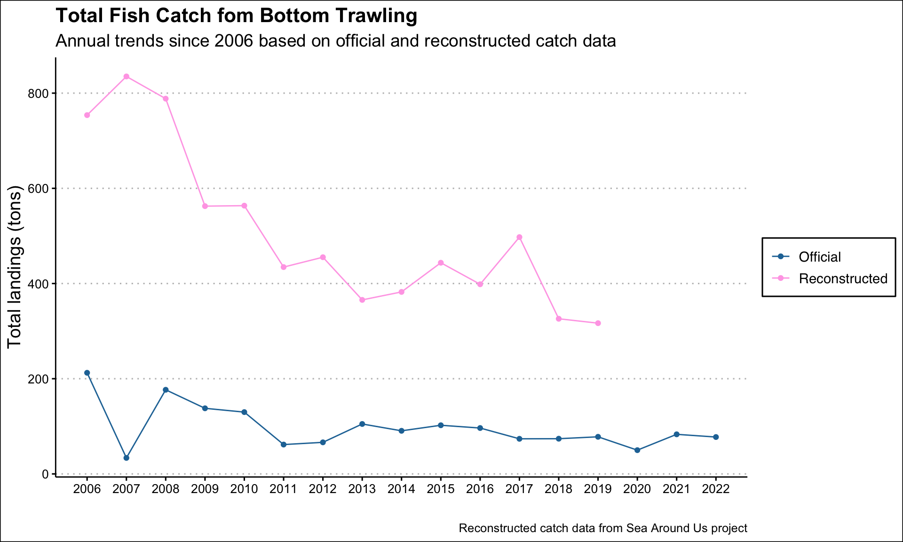
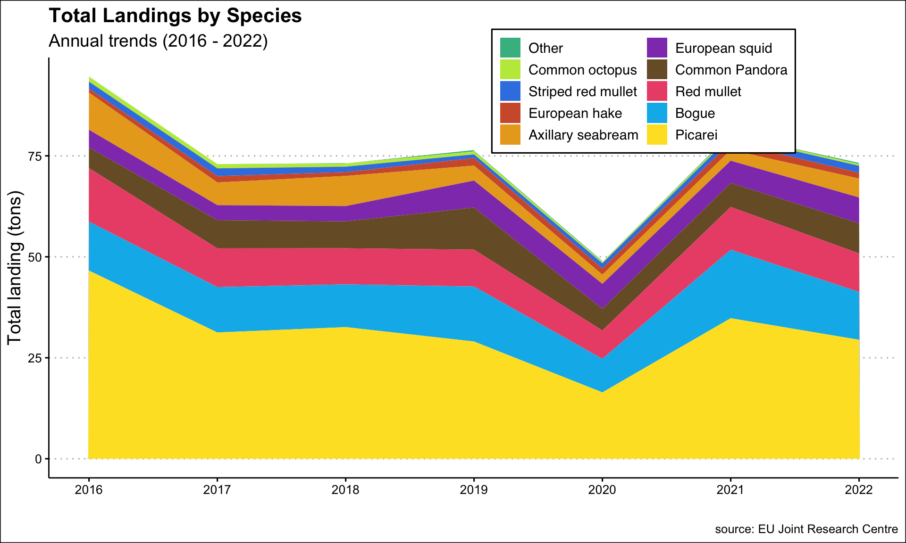
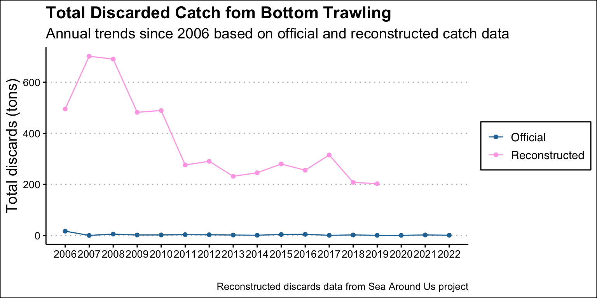
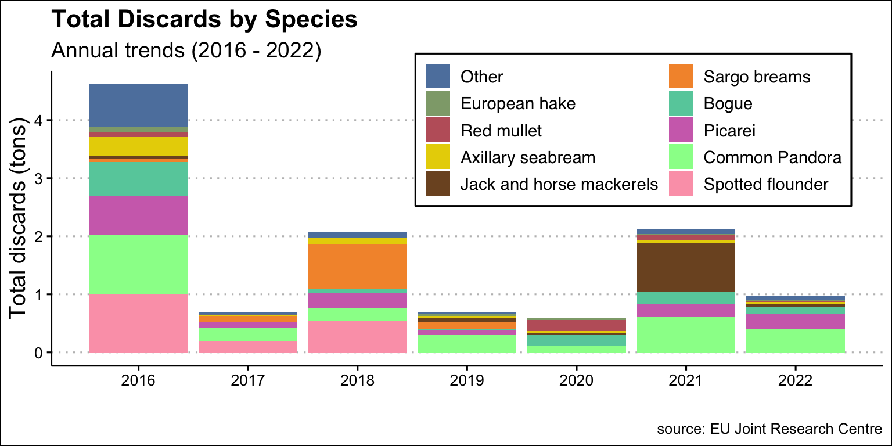

4 Landings and discards
Landings
Total fish landings in the bottom trawl fishery have declined significantly since their peak in 2006, when they exceeded 200 tons. In recent years, landings have remained below 50 tons, with moderate year-to-year fluctuations. Between 2016 and 2022, annual landings averaged 76 tons (SD ≈ 14), reaching a low of 50 tons in 2020 before showing partial recovery. Overall, the data indicate a sustained decline in landings compared to earlier peak levels (Figure 4.1).
However, reconstructed catch estimates suggest that total removals from the bottom trawl fishery are substantially higher than official landings data indicate. The reconstructed average annual catch for the entire fleet was estimated at 384 tons—more than five times the reported landings for the same period (Pauly and Zeller, 2025). This discrepancy highlights potential under-reporting or other factors affecting the accuracy of official landings records.
Based on official data, the bottom trawl fishery is dominated by Picarei (Spicara smaris), which accounts for over 52 tons annually, far surpassing any other species. A secondary group contributes moderate landings, including Red mullet (Mullus barbatus) and Bogue (Boops boops), both around 11.5 tons, followed by European squid (Loligo vulgaris, 5.8 tons), Common Pandora (Pagellus erythrinus, 4.9 tons), and Axillary seabream (Pagellus acarne, 4.0 tons)(Figure 4.2).
Smaller contributions come from Common octopus (Octopus vulgaris, 2.4 tons) and Striped red mullet (Mullus surmuletus, 2.1 tons). Most other species land less than 1 ton per year, with European hake (Merluccius merluccius, 0.97 tons) and Giant red shrimp (Aristaeomorpha foliacea, 0.18 tons) among the more notable. Overall, Picarei dominates the fishery, while a handful of other species contribute moderate or minor but steady landings (Figure 4.2).

Discards
On average, the total annual discards since 2016 across all species amount to approximately 1.67 tons per year, reflecting the overall scale of non-retained catch in the bottom trawl fishery (fig-discards-ts, Figure 4.4). However, reconstructed data suggests this value can be as high as 245 tons per year (Figure 4.3) (Pauly and Zeller, 2025). This discrepancy highlights the substantial difference between official and reconstructed catch data, indicating that discards may be a significant component of the fishery that is not fully captured in official records.

Picarei (Spicara smaris) dominates discards in the bottom trawl fishery, with a total of 34.6 tons across all years, averaging 2.5 tons per year—far exceeding any other species. This aligns with its prominence in landings, suggesting it is both highly targeted and frequently discarded, likely due to market preferences or selectivity issues. Common Pandora (Pagellus erythrinus) follows at a distant second, with 5.3 tons total and 0.4 tons annually, while Bogue (Boops boops), Spotted flounder (Citharus linguatula), and Red mullet (Mullus barbatus) contribute between 1.2 and 2.4 tons total, averaging 0.1 to 0.3 tons per year. A notable shift is seen in Spotted flounder, which had relatively high discard levels before 2018, peaking at 1 ton in 2016, but are almost absent afterward. This suggests potential shift in stock dynamics affecting its presence in catches (Figure 4.4).
